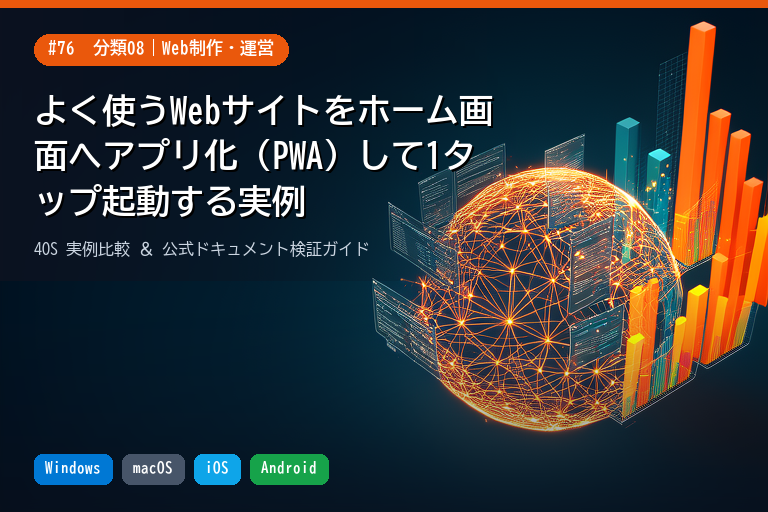

#76｜分類08: Web制作・ブログ・デジタルマーケティング 2026-11-26

よく使うWebサイトをホーム画面へアプリ化（PWA）して1タップ起動する実例｜Windows・macOS・iOS・Android
「毎日何度も開く管理画面や、特定のツールへのアクセスを、ブラウザを開いてURLを打ち込む手間を省きたい……」そんな悩みをお持ちではありませんか？
WebサイトをまるでスマホアプリやPCソフトのように、デスクトップやホーム画面に固定して1タップで起動させる方法があります。それがPWA（Progressive Web App）の仕組みを活用した「ホーム画面への追加」です。
この記事では、Windows、macOS、iOS、Androidの4つの主要OSすべてにおいて、Webサイトをアプリ化する具体的な手順と、うまくいかない時の解決策を徹底解説します。これを知るだけで、あなたの作業効率は劇的に向上するはずです。
4OS比較早見表
| OS | 推奨ブラウザ | 主な操作（アプリ化） | 特徴・備考 |
|---|---|---|---|
| Windows | Microsoft Edge | 「アプリ」→「ホーム画面に追加」 | タスクバーへのピン留めが可能。 |
| macOS | Safari / Chrome | 「ファイル」→「ホーム画面に追加」 | Dockに配置可能。Safariでの操作がスムーズ。 |
| iOS | Safari | 「共有ボタン」→「ホーム画面に追加」 | iPhone/iPadのホーム画面にアイコンを作成。 |
| Android | Google Chrome | 「…」→「アプリとしてインストール」 | Android標準に近い挙動。通知機能等も対応。 |
1. Windows 11 での実例手順
Windowsでは、Microsoft Edgeを使用するのが最もスムーズな方法です。
標準機能に基づく実例手順
- Edgeでサイトを開く: アプリ化したいWebサイト（例：Googleカレンダーや社内管理ツール）をEdgeで開きます。
- メニューを選択: 右上の「…」アイコンをクリックし、メニュー内の「アプリ」を選択します。
- ホーム画面に追加: 表示されたオプションから「ホーム画面に追加」をクリックします。
- 設定と作成: ダイアログが表示されるので、任意の名前を入力し、「作成」を押します。
- ピン留め: 作成されたアイコンをデスクトップに置く、あるいはタスクバーにドラッグして固定することで、次から1クリックで起動できます。
標準機能の制限事項・代替手段
- Chromeブラウザの場合: Windows版Chromeでも同様の操作が可能ですが、バージョンやサイトの仕様により「アプリとしてインストール」ボタンが表示されないことがあります。その場合はEdgeでの操作を推奨するか、拡張機能を利用してショートカットを作成する必要があります。
- 対応サイト制限: PWA仕様（
manifest.json）に準拠していない古いサイトでは、「ホーム画面に追加」がグレーアウトすることがあります。
よくあるトラブルと解決チェックリスト
- 「アプリとしてインストール」ボタンが出ない
- 原因: サイト側でPWA定義がない、またはHTTPS通信ではないため。
- 解決策: 「ブックマークを作成」し、作成されたURLをデスクトップへドラッグ＆ドロップしてショートカットを作成してください。
- アイコンが正しく表示されない
- 原因: サイト側のファビコン設定ミスやブラウザキャッシュの問題。
- 解決策: Edgeの閲覧履歴・キャッシュを削除し、再起動してから再度試行してください。
- ウィンドウサイズが固定されずブラウザのように見える
- 原因: インストール時の「ウィンドウの幅と高さを指定する」にチェックが入っていない。
- 解決策: 再度インストール設定を確認するか、「ホーム画面に追加（ショートカットのみ）」を選択して、ダブルクリックで起動する運用に切り替えてください。
2. macOS での実例手順
MacではSafariとChromeのどちらでもアプリ化が可能ですが、OS標準のSafariを使うのが最も統合された体験を得られます。
標準機能に基づく実例手順
- Safariでサイトを開く: 対象サイトをSafariで開きます。
- メニューから追加: メニューバーの「ファイル」→「ホーム画面に追加」をクリックします（またはアドレスバー右側のアイコン）。
- 名前を指定: ダイアログで名前を入力し、「追加」を押すと、Dockにショートカットが作成されます。
- Chromeの場合: Chromeを使用する場合は「…」ボタンから「アプリとしてインストール」を選択してください。
標準機能の制限事項・代替手段
- Safariの仕様: macOSのSafariではPWA化が可能ですが、サイトによってはウィンドウ枠なしモード（独立したアプリのような挙動）が強制されない場合があります。
- Chromeの制限: Googleのポリシー変更により、一部の環境で「アプリとしてインストール」ボタンが非表示になることがあります。その際はSafariでの操作を推奨します。
よくあるトラブルと解決チェックリスト
- 「ホーム画面に追加」メニューがグレーアウトしている
- 原因: サイトがPWA仕様に準拠していない、または非HTTPSのサイト。
- 解決策: 「ファイル」→「ブックマーク」で保存し、デスクトップフォルダへドラッグ＆ドロップしてください。
- アイコンサイズが小さすぎる
- 原因: サイト側のファビコン解像度が低い（推奨192x192px以上）。
- 解決策: OSの設定変更は不可ですが、キャッシュクリアを行うことで再読み込み時に改善する場合があります。
- 起動した際に広告やポップアップが表示される
- 原因: サードパーティ製スクリプトの影響や、Safariのコンテンツブロック機能との干渉。
- 解決策: Safariの設定「プライバシー」から「ウェブサイトのトラッキングを防ぐ」を個別管理し、挙動を確認してください。
3. iOS（iPhone / iPad）での実例手順
iPhoneやiPadでは、Safariブラウザを使ってホーム画面にアイコンを配置します。
標準機能に基づく実例手順
- Safariでサイトを開く: 対象のWebサイトをSafariで開きます（HTTPS必須）。
- 共有ボタンをタップ: 下部ツールバーにある「共有」ボタン（四角から矢印が出ているアイコン）をタップします。
- ホーム画面に追加を選択: リストを下にスクロールし、「ホーム画面に追加」をタップします。
- 完了: ホーム画面にアイコンが表示され、アプリのように独立したウィンドウで起動するようになります。
標準機能の制限事項・代替手段
- iPadOSの注意点: Split View（分割表示）環境では正常に動作しないことがあります。全画面での使用を推奨します。
- 対応サイト制限: iOS固有のAPIに依存しているサイトは、アプリ化しても正しく動かない場合があります。不可な場合はブックマークとして保存するしかありません。
よくあるトラブルと解決チェックリスト
- 「共有メニューから『ホーム画面に追加』が見つからない
- 原因: サイトがPWA仕様に準拠していない、またはSafari以外のブラウザを使用している（iOSではSafariでしか機能しません）。
- 解決策: 「ブックマーク」を作成し、ブラウザから直接アクセスする運用に変更してください。
- 起動時にSafariのタブバーが表示される
- 原因: サイト側の設定ミスやOSのバグによりPWAとして分離できていない。
- 解決策: iPhoneの「設定」→「Safari」→「プライバシーとセキュリティ」から履歴・Cookieを消去し、再起動してください。
- アイコンの画像が表示されない
- 原因: サイト側のファビコンが読み込めない。
- 解決策: Safariのキャッシュクリアを行い、別のデバイスで確認して再現性をチェックしてください。
4. Android での実例手順
AndroidではGoogle Chromeが最も標準的なPWA体験を提供します。
標準機能に基づく実例手順
- Chromeでサイトを開く: 対象WebサイトをChromeで開きます。
- メニューボタンをタップ: 右上の「…」アイコンをタップします。
- インストールを選択: 「アプリとしてインストール」または「ホーム画面に追加」を選択します。
- ※PixelやGalaxyなど機種により文言が異なる場合があります。「ショートカットを作成」と出る場合はそちらを選択してください。
- 完了: ダイアログで名前を指定し、「追加」を押すと、ホーム画面にアイコンが表示されます。
標準機能の制限事項・代替手段
- Firefox / Samsung Internetなど: ブラウザによってメニュー名が異なり、PWAとしての完全な動作（通知等）が保証されない場合があります。基本的にはChromeでの操作を推奨します。
- 対応サイト制限: 一部の広告系ページやランディングページではPWA化に対応していないことがあります。
よくあるトラブルと解決チェックリスト
- 「アプリとしてインストール」ボタンが表示されない
- 原因: サイトがPWA仕様に準拠していない、またはChromeがデフォルトブラウザになっていない。
- 解決策: 「ショートカットを作成」を選択し、アイコンを配置してください。通知機能などは利用できないことを前提とします。
- 起動後にブラウザのアドレスバーが残る
- 原因: サイト側の設定ミスやAndroid OSのバージョンによる挙動の違い。
- 解決策: Chromeの「履歴」から「閲覧データを削除」を行い、キャッシュをクリアして再試行してください。
- アイコンが正しく表示されない
- 原因: サイト側のファビコン設定ミスやグラフィックレンダリングの問題。
- 解決策: ブラウザのキャッシュ削除を行うか、別のブラウザで試して対応状況を確認してください。
まとめ：快適なマルチOS環境を作るポイント
Webサイトをアプリ化（PWA）することで、作業の導線が整理され、集中力を維持したままツールを使いこなすことができます。しかし、スムーズなPWA体験を実現するためには、以下の基礎知識も重要です。
- レンタルサーバーと独自ドメイン: PWAを正しく動作させるにはHTTPS（SSL化）が必須です。信頼性の高いレンタルサーバーを選び、独自ドメインでSSL設定を正しく行うことが第一歩です。
- SEOツールでの確認: 自分のサイトをPWA化する場合、Google Search ConsoleなどでPWAタグが正しく認識されているかを確認することで、ユーザー体験と検索評価の両立を目指せます。
- Web制作教材の活用: より高度なPWA（プッシュ通知やオフライン対応など）を自ら実装したい場合は、専門的なWeb制作教材を活用して
manifest.jsonやService Workerの知識を深めるのが近道です。
適切なツールと環境を整え、マルチOSを横断した快適なワークフローを構築しましょう！
参考文献・公式ドキュメント（一次情報ソース）
本記事の手順・仕様は以下の各OSおよびツールの公式ドキュメントに基づいています。OSアップデートによりメニュー名称や挙動が変わる場合があるため、最新仕様の確認にもご活用ください。